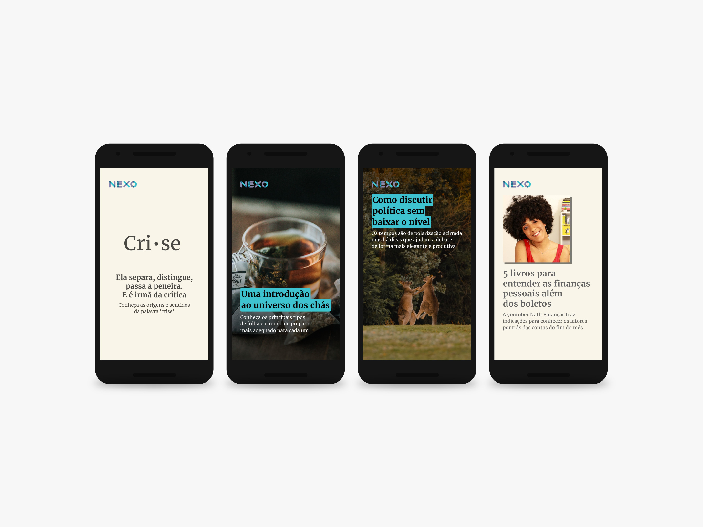

illustrations for nexo journal
nexo jornal — 2017-2021
At Nexo Jornal, there is a constant need for editorial illustrations — most of the time to illustrate less news and more playful content, such as book excerpts, interactives and quizzes. These are some of the favorites I've produced since 2017.

This project was developed using Adobe Illustrator and Adobe Photoshop, under the direction of Guilherme Falcão